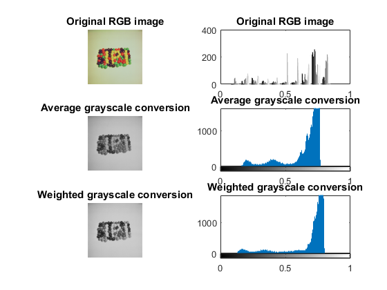
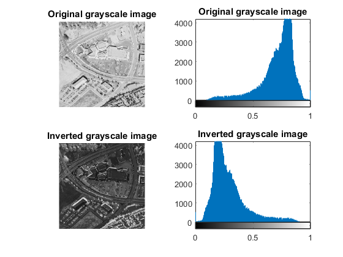
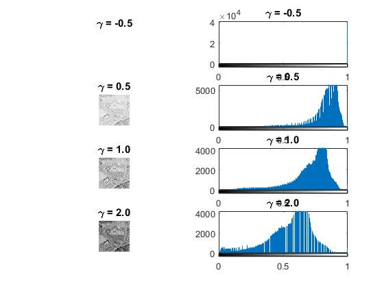
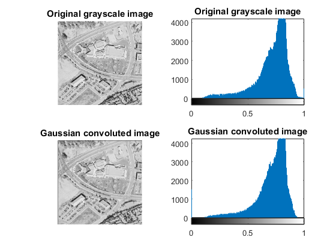
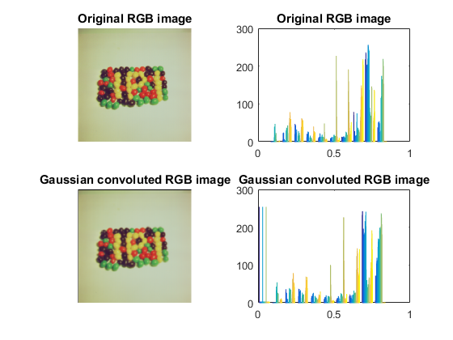
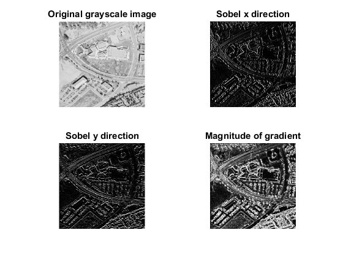

Contents
Reset everything and load images
clear all; close all, clc; img1 = im2double(imread('images/4.1.07-jelly-beans.tiff')); img2 = im2double(imread('images/5.2.09-aerial.tiff'));
Task 1: Grayscale conversion
R = img1(:,:,1); G = img1(:,:,2); B = img1(:,:,3); gray1 = (R+G+B)/3; gray2 = 0.2126*R + 0.7152*G + 0.0722*B; figure('Name','Task 1: Grayscale conversion','NumberTitle','Off'); subplot(3,2,1); imshow(img1); title('Original RGB image'); subplot(3,2,2); hist(img1); title('Original RGB image'); subplot(3,2,3); imshow(gray1); title('Average grayscale conversion'); subplot(3,2,4); imhist(gray1); title('Average grayscale conversion'); subplot(3,2,5); imshow(gray2); title('Weighted grayscale conversion'); subplot(3,2,6); imhist(gray2); title('Weighted grayscale conversion');
Task 2a: Intensity Transformations
% Negative inversion inv1 = 1 - img2; figure('Name','Task 2a: Intensity Transformations','NumberTitle','Off'); subplot(2,2,1); imshow(img2); title('Original grayscale image'); subplot(2,2,2); imhist(img2); title('Original grayscale image'); subplot(2,2,3); imshow(inv1); title('Inverted grayscale image'); subplot(2,2,4); imhist(inv1); title('Inverted grayscale image');
Task 2b: Intensity Transformations
c = 1; g1 = -0.5; g2 = 0.5; g3 = 1; g4 = 2; gamma1 = c * img2 .^ g1; gamma2 = c * img2 .^ g2; gamma3 = c * img2 .^ g3; gamma4 = c * img2 .^ g4; figure('Name','Task 2b: Intensity Transformations','NumberTitle','Off'); subplot(4,2,1); imshow(gamma1); title('\gamma = -0.5'); subplot(4,2,2); imhist(gamma1); title('\gamma = -0.5'); subplot(4,2,3); imshow(gamma2); title('\gamma = 0.5'); subplot(4,2,4); imhist(gamma2); title('\gamma = 0.5'); subplot(4,2,5); imshow(gamma3); title('\gamma = 1.0'); subplot(4,2,6); imhist(gamma3); title('\gamma = 1.0'); subplot(4,2,7); imshow(gamma4); title('\gamma = 2.0'); subplot(4,2,8); imhist(gamma4); title('\gamma = 2.0');
Task 3
Kernels
gauss = 1/16*[1 2 1; 2 4 2; 1 2 1]; avg = 1/9 * ones(3);
Task 3a: Spatial Convolution
img2_gauss = conv3(img2, gauss); figure('Name','Task 3a: Spatial Convolution','NumberTitle','Off'); subplot(2,2,1); imshow(img2); title('Original grayscale image'); subplot(2,2,2); imhist(img2); title('Original grayscale image'); subplot(2,2,3); imshow(img2_gauss); title('Gaussian convoluted image'); subplot(2,2,4); imhist(img2_gauss); title('Gaussian convoluted image');
Task 3b: Convolve Colour Image
R_gauss = conv3(R, gauss); G_gauss = conv3(G, gauss); B_gauss = conv3(B, gauss); img1_gauss = cat(3, R_gauss, G_gauss, B_gauss); figure('Name','Task 3b: Convolve Colour Image','NumberTitle','Off'); subplot(2,2,1); imshow(img1); title('Original RGB image'); subplot(2,2,2); hist(img1); title('Original RGB image'); subplot(2,2,3); imshow(img1_gauss); title('Gaussian convoluted RGB image'); subplot(2,2,4); hist(img1_gauss); title('Gaussian convoluted RGB image');
Task 3c: Sobel Operators
s_x = [-1 0 1; -2 0 2; -1 0 1]; s_y = [1 2 1; 0 0 0; -1 -2 -1]; img2_s_x = conv3(img2, s_x); img2_s_y = conv3(img2, s_y); img2_grad = sqrt(img2_s_x.^2 + img2_s_y.^2); figure('Name','Task 3c: Sobel Operators','NumberTitle','Off'); subplot(2,2,1); imshow(img2); title('Original grayscale image'); subplot(2,2,2); imshow(img2_s_x); title('Sobel x direction'); subplot(2,2,3); imshow(img2_s_y); title('Sobel y direction'); subplot(2,2,4); imshow(img2_grad); title('Magnitude of gradient'); % The magnitude of gradient tells us how much of a change there is in the % image.